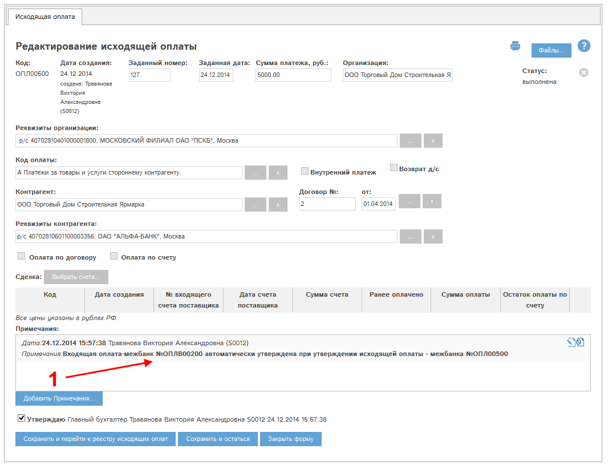

В программе "Мобильный офис" доступна возможность проведения межбанковских платежей между разными банковскими счетами одной и той же организации.
Для проведения межбанка необходимо создать исходящую оплату. При создании оплаты нужно выбрать контрагентом текущую организацию:
Рис. Создание исходящей оплаты. В качестве контрагента выбрана текущая организация (1).
При этом автоматически производятся следующие действия:
Укажем заданный номер, заданную дату и сумму платежа. Нажмем "Сохранить исходящую оплату и перейти к утверждению". Карта оплаты будет сохранена, откроется следующее окно:
Рис. Карта исходящей оплаты при проведении межбанковского платежа. Оплата не утверждена.
Блоки "Оплата по договору" и "Оплата по счету" (1) в режиме межбанковского платежа неактивны.
Утвердим оплату. Для этого отметим галочку "Утверждаю" (2) и нажмем "Сохранить и остаться" (3). Окно оплаты примет следующий вид:

Рис. Карта исходящей оплаты при проведении межбанковского платежа. Оплата утверждена.
В блоке Примечания (1) указана автоматически созданная и утвержденная связанная входящая оплата. Найдем эту оплату в реестре входящих оплат, откроем ее:
Рис. Карта автоматически созданной и утвержденной входящей оплаты при проведении межбанковского платежа.
В карте входящей оплаты:
При снятии утверждения любой из этих оплат будет автоматически снято утверждение связанной оплаты, и наоборот - при дальнейшем утверждении одной оплаты другая также будет утверждена.
Для внесения изменений в межбанковский платеж необходимо снять утверждение исходящей оплаты, внести изменения и вновь утвердить исходящую оплату. Входящая оплата будет автоматически преобразована согласно изменениям и утверждена.